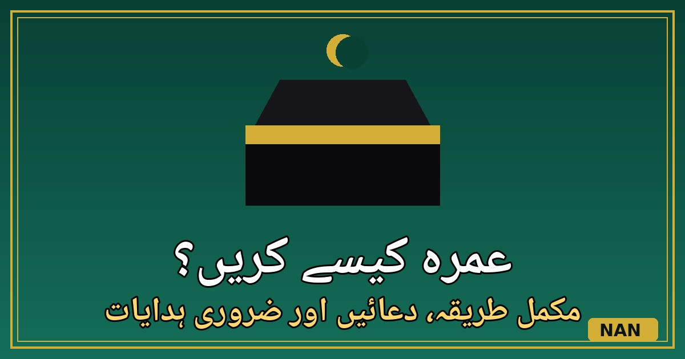

عمرہ کیسے کریں؟ مکمل طریقہ، دعائیں اور ضروری ہدایات

عمرہ ہر مسلمان کی سب سے بڑی خواہشات میں سے ایک ہے — بیت اللہ کی زیارت، کعبہ کا طواف اور رسول اللہ ﷺ کے شہر مدینہ منورہ کی حاضری۔ ہر سال پاکستان سے لاکھوں لوگ عمرے پر جاتے ہیں، مگر پہلی بار جانے والوں کے ذہن میں بہت سے سوال ہوتے ہیں: عمرہ کیسے کریں؟ احرام کہاں سے باندھیں؟ طواف اور سعی کا طریقہ کیا ہے؟ اس مضمون میں عمرے کا مکمل طریقہ اردو میں، قدم بہ قدم، دعاؤں کے عربی متن اور اردو ترجمے کے ساتھ بتایا گیا ہے۔
1۔ عمرہ کیا ہے اور اس کی فضیلت کیا ہے؟
عمرہ اسلام کی ایک اہم عبادت ہے جس میں مکہ مکرمہ جا کر احرام باندھ کر بیت اللہ کا طواف، صفا و مروہ کی سعی اور سر منڈوانا یا بال کتروانا شامل ہوتا ہے۔ حج کے برعکس عمرہ سال کے کسی بھی وقت ادا کیا جا سکتا ہے — سوائے حج کے ایام کے۔ رسول اللہ ﷺ نے فرمایا کہ ایک عمرہ دوسرے عمرے تک ان کے درمیان کے گناہوں کا کفارہ ہے۔ رمضان میں عمرے کا ثواب حج کے برابر بتایا گیا ہے، اسی لیے رمضان میں عمرے کے لیے بہت رش ہوتا ہے۔
2۔ عمرے سے پہلے کی تیاری
سفر سے پہلے چند کام ضرور مکمل کر لیں۔ سب سے پہلے پاسپورٹ چیک کریں — اس کی میعاد کم از کم چھ ماہ ہونی چاہیے۔ پھر کسی معتبر ٹریول ایجنسی سے عمرہ پیکج لیں یا خود آن لائن ویزا کے لیے درخواست دیں۔ پیکج میں ہوٹل، ٹرانسپورٹ اور ویزا شامل ہونا چاہیے — قیمت لکھوا کر لیں تاکہ بعد میں کوئی اضافی مطالبہ نہ ہو۔ احرام کی چادریں، نعلین (چپل)، دوائیاں اور سن بلاک ساتھ رکھیں۔ نسک (Nusuk) ایپ سے روضۂ رسول ﷺ کی زیارت کے لیے اجازت نامہ (پرمٹ) بھی سفر سے پہلے بک کر لیں۔
3۔ احرام باندھنا اور عمرے کی نیت
احرام عمرے کی پہلی شرط ہے۔ پاکستان سے جانے والے زائرین عام طور پر جدہ ہوائی اڈے پر اترتے ہیں، اس لیے احرام گھر سے یا جہاز میں میقات سے پہلے باندھنا ہوتا ہے۔ مرد دو سفید بغیر سلی چادریں پہنتے ہیں — ایک تہبند کی طرح، دوسری کندھوں پر۔ عورتیں اپنا عام باپردہ لباس پہنتی ہیں، صرف چہرہ کھلا رکھا جاتا ہے اور دستانے نہیں پہنے جاتے۔ احرام باندھنے سے پہلے غسل کریں اور دو رکعت نفل پڑھیں۔ پھر عمرے کی نیت کریں: "اے اللہ! میں عمرے کی نیت کرتا/کرتی ہوں، اسے میرے لیے آسان فرما اور قبول فرما۔" نیت کے بعد تلبیہ پڑھنا شروع کر دیں:
لَبَّیْکَ اللَّهُمَّ لَبَّیْکَ، لَبَّیْکَ لَا شَرِیْکَ لَکَ لَبَّیْکَ، إِنَّ الْحَمْدَ وَالنِّعْمَةَ لَکَ وَالْمُلْکَ، لَا شَرِیْکَ لَکَ
ترجمہ: "اے اللہ! میں حاضر ہوں، میں حاضر ہوں، تیرا کوئی شریک نہیں، میں حاضر ہوں۔ بے شک تمام تعریفیں اور نعمتیں تیرے ہی لیے ہیں اور بادشاہت بھی تیری ہی ہے، تیرا کوئی شریک نہیں۔" احرام کی حالت میں تلبیہ کثرت سے پڑھیں۔ یاد رکھیں کہ احرام کی حالت میں خوشبو لگانا، سر ڈھانپنا (مردوں کے لیے)، ناخن کاٹنا اور بال کاٹنا منع ہے۔
4۔ طواف — بیت اللہ کے سات چکر
مکہ پہنچ کر سب سے پہلے حرم شریف جائیں اور طواف کریں۔ طواف حجرِ اسود سے شروع ہوتا ہے — اگر ممکن ہو تو اس کو بوسہ دیں، ورنہ اس کی طرف ہاتھ سے اشارہ کر کے "بسم اللہ، اللہ اکبر" کہیں۔ بیت اللہ کو اپنے بائیں ہاتھ کی طرف رکھ کر سات چکر لگائیں۔ پہلے تین چکروں میں مردوں کے لیے رمل (تیز اور چھوٹے قدموں سے چلنا) سنت ہے، باقی چار چکر عام رفتار سے چلیں۔ ہر چکر میں رکنِ یمانی اور حجرِ اسود کے درمیان یہ دعا پڑھنا سنت ہے: "رَبَّنَا آتِنَا فِي الدُّنْيَا حَسَنَةً وَفِي الْآخِرَةِ حَسَنَةً وَقِنَا عَذَابَ النَّارِ"۔ طواف کے دوران کوئی مقررہ دعا لازم نہیں — دل سے جو چاہیں مانگ سکتے ہیں۔ سات چکر مکمل ہونے پر مقامِ ابراہیم کے پیچھے دو رکعت نماز پڑھیں، پھر زمزم کا پانی پیئیں۔
5۔ سعی — صفا و مروہ کے درمیان سات چکر
طواف کے بعد سعی کی باری آتی ہے۔ صفا کی پہاڑی پر چڑھ کر کعبہ کی طرف رخ کر کے اللہ اکبر کہیں اور دعا کریں، پھر مروہ کی طرف چلیں۔ صفا سے مروہ تک ایک چکر ہوتا ہے، اور مروہ سے واپس صفا تک دوسرا — اس طرح کل سات چکر مکمل ہوتے ہیں، اور آخری چکر مروہ پر ختم ہوتا ہے۔ راستے میں دو سبز نشانوں کے درمیان مردوں کے لیے تیز چلنا سنت ہے، عورتیں عام رفتار سے چلیں۔ یہ سعی حضرت حاجرہ علیہا السلام کی یاد ہے، جو اپنے بچے حضرت اسماعیل علیہ السلام کے لیے پانی کی تلاش میں صفا و مروہ کے درمیان دوڑی تھیں۔
6۔ حلق یا قصر — عمرہ مکمل
سعی مکمل ہونے پر عمرے کا آخری رکن سر کے بال منڈوانا یا کتروانا ہے۔ مردوں کے لیے سر منڈوانا (حلق) افضل ہے، اس کا ثواب زیادہ ہے؛ جو منڈوانا نہ چاہے وہ بال چھوٹے کروا لے (قصر)۔ عورتوں کے لیے سر منڈوانا جائز نہیں — وہ اپنے بالوں کی نوک سے انگلی کے ایک پور کے برابر بال کاٹ لیں۔ اس کے بعد احرام کھل جاتا ہے اور عمرہ مکمل ہو جاتا ہے۔ اب آپ عام کپڑے پہن سکتے ہیں اور احرام کی پابندیاں ختم ہو جاتی ہیں۔
7۔ مدینہ منورہ کی زیارت
عمرے کے بعد اکثر زائرین مدینہ منورہ جاتے ہیں۔ مسجدِ نبوی ﷺ میں نماز پڑھیں — یہاں ایک نماز کا ثواب عام مسجد کی نسبت ایک ہزار گنا زیادہ ہے۔ روضۂ رسول ﷺ پر حاضری دیں اور ادب سے سلام عرض کریں: "السَّلَامُ عَلَیْکَ یَا رَسُوْلَ اللہِ"۔ روضہ مبارک کے قریب واقع ریاض الجنہ میں نوافل پڑھنا بڑی سعادت ہے — اس کے لیے نسک ایپ سے پہلے سے پرمٹ لینا ضروری ہے۔ مسجدِ قبا کی زیارت بھی کریں، وہاں دو رکعت نفل پڑھنے کا ثواب ایک عمرے کے برابر ہے۔
8۔ عمرے کا خرچ اور پیکج کا انتخاب
پاکستان سے عمرے کے پیکج کی قیمت موسم اور سہولتوں کے لحاظ سے بدلتی رہتی ہے — عام دنوں میں معیاری پیکج ڈھائی سے چار لاکھ روپے تک ہوتا ہے، جبکہ رمضان میں قیمت بڑھ جاتی ہے۔ پیکج لیتے وقت تصدیق کریں: ویزا، ہوائی ٹکٹ، ہوٹل کا فاصلہ، کھانا شامل ہے یا نہیں، اور مکہ سے مدینہ کی ٹرانسپورٹ کون سی ہے۔ صرف سستا پیکج دیکھ کر فیصلہ نہ کریں — حرم سے دور ہوٹل روزانہ کی عبادت کو مشکل بنا دیتا ہے۔ ہمیشہ لائسنس یافتہ ٹریول ایجنسی سے پیکج لیں اور پوری رقم کی رسید لیں۔
9۔ عام غلطیاں اور احتیاطیں
پہلی بار عمرے پر جانے والے چند عام غلطیاں کرتے ہیں۔ احرام کی پابندیوں کو ہلکا نہ سمجھیں — احرام کے بعد خوشبو، سر ڈھانپنا اور ناخن کاٹنا منع ہے۔ حجرِ اسود کو چھونے کے لیے دھکم پیل نہ کریں — رش ہو تو دور سے اشارہ کافی ہے۔ طواف اور سعی میں جلد بازی نہ کریں — آرام سے، خشوع کے ساتھ عبادت کریں۔ صحت کا خیال رکھیں — پانی زیادہ پئیں اور دوائیاں ساتھ رکھیں۔ نامعلوم لوگوں کو پیسے یا پاسپورٹ نہ دیں — ویزا اور ٹکٹ کے نام پر فراڈ عام ہے۔ اپنے پاسپورٹ، ویزا اور ٹکٹ کی تصویر موبائل میں ضرور رکھیں۔
10۔ اکثر پوچھے جانے والے سوالات
سوال: عمرے کے لیے بہترین وقت کون سا ہے؟
جواب: موسم کے لحاظ سے نومبر سے فروری تک کا وقت بہترین ہے — موسم خوشگوار ہوتا ہے اور رش بھی نسبتاً کم ہوتا ہے۔ رمضان میں ثواب زیادہ ہے مگر رش اور قیمتیں بھی بہت زیادہ ہوتی ہیں۔
سوال: عمرہ کتنے دن میں مکمل ہوتا ہے؟
جواب: عمرے کے ارکان (طواف، سعی، حلق) چند گھنٹوں میں مکمل ہو جاتے ہیں۔ عام پیکج 14 سے 21 دن کے ہوتے ہیں تاکہ مکہ و مدینہ میں عبادت اور زیارت کے لیے کافی وقت ملے۔
سوال: کیا عورتیں بغیر محرم کے عمرہ کر سکتی ہیں؟
جواب: سعودی عرب کے نئے قوانین کے تحت 18 سال سے زائد عمر کی خواتین گروپ کے ساتھ عمرہ ویزا حاصل کر سکتی ہیں، مگر شرعی مسئلے میں علماء کی رائے مختلف ہے — سفر سے پہلے اپنے معتبر عالم سے ضرور پوچھ لیں۔
عمرہ صرف ایک سفر نہیں — یہ دل کی تازگی اور ایمان کی تجدید ہے۔ جو لوگ عمرے کی نیت کر چکے ہیں، اللہ ان کا راستہ آسان فرمائے؛ اور جو ابھی نیت کر رہے ہیں، اللہ انہیں جلد اس سعادت سے نوازے۔ اس مضمون کو اپنے عزیزوں کے ساتھ شیئر کریں تاکہ پہلی بار جانے والوں کی رہنمائی ہو سکے۔